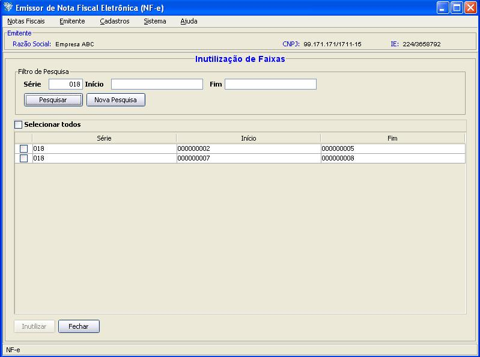
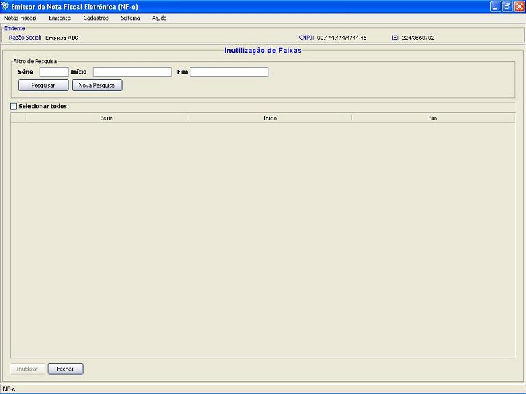
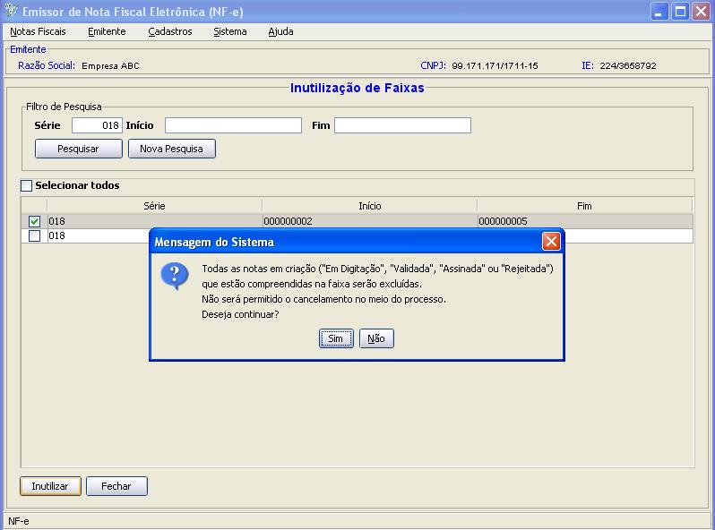
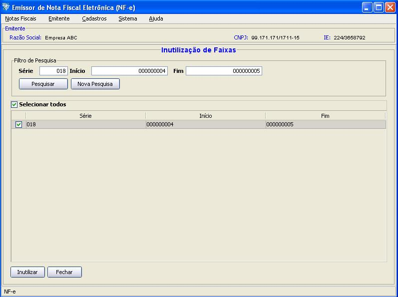

Software Emissor NF-e
Inutilização
de Faixas de Numeração
Conforme o Ajuste
Sinief 07/05, existe a seguinte
obrigação com relação
à Inutilização:
"O contribuinte
deverá
solicitar, mediante Pedido de Inutilização de
Número da NF-e, até o 10 (décimo) dia
do mês
subseqüente, a inutilização de
números de
NF-es não utilizados, na eventualidade de quebra de
seqüência da numeração da
NF-e."
Recomenda-se ao emitente, na geração e
transmissão
das NF-e's, utilizar a numeração
seqüencial das
NF-e's para cada série.
Entretanto, podem ocorrer os seguintes fatos para uma parcial "quebra"
da numeração de
autorizações (considerando
o mesmo emitente e uma mesma série):
- A NF-e transmitida para a
SEFAZ foi rejeitada por
algum motivo, sendo que a NF-e deverá ser revista. Neste
caso,
como a NF-e não foi autorizada ou denegada pela SEFAZ,
é
considerada omissão do número (lacuna) na SEFAZ.
- Uma NF-e de
numeração maior foi
autorizada na SEFAZ, mas existem NF-e's de
numeração
inferior em situação "Em
Digitação",
"Validada" ou "Assinada" (ou seja, ainda não autorizadas),
formando uma lacuna na numeração na SEFAZ.
- Uma NF-e de
numeração maior foi
autorizada na SEFAZ e não existem NF-e's de
numeração inferior, formando uma
lacuna na numeração na SEFAZ.
Dentre outros motivos.
Tais números poderão ser utilizados pelo
usuário
(exemplo: pode-se corrigir a NF-e rejeitada, contanto que
não
seja rejeição por duplicidade, e
enviá-la
novamente para a SEFAZ para autorização).
Entretanto,
conforme o Ajuste
Sinief
citado, até o décimo dia do mês
subseqüente,
deve-ser realizar a inutilização dos
números
não utilizados.
A
Inutilização é o
processo de informar à SEFAZ que determinada faixa
de
numeração não foi e
não
poderá mais ser utilizada, sendo portanto vedado a
autorização posterior de NF-e's com os
números da
faixa.
Exemplo:
Tem-se as NF-e's de série 18 com as seguintes
numerações:
| Número |
Situação |
| 1 |
Autorizada |
| 2 |
Em
Digitação |
| 3 |
Rejeitada |
| 4 |
Não
foi criada NF-e |
| 5 |
Não
foi criada NF-e |
| 6 |
Cancelada |
| 7 |
Assinada |
| 8 |
Validada |
| 9 |
Autorizada |
| 10 |
Denegada |
| 11 |
Em
Digitação |
Neste caso, é necessário inutilizar as
seguintes faixas:
- Numeração
de 2 a 5 (ou seja, os números 2, 3, 4 e 5)
- Numeração
de 7 a 8 (ou seja, os números 7 e 8)
Faixas a Inutilizar indicadas pelo Software:

Realizando a
Inutilização
Pré-condição:
-Um emitente
deverá estar previamente iniciado.
- Acessar o menu: Notas Fiscais
-> Inutilizar faixa de numeração

- Realizar a
pesquisa pelas faixas a serem inutilizadas, informando a
série, numeração inicial e final,
clicando em Pesquisar ao final para realização da
busca.
- O Software
realizará a busca e retornará as
faixas possíveis de
inutilização do intervalo informado.
- Selecionar as
faixas desejadas.
- Após a
seleção, clicar em Inutilizar.
- Confirmar que as NF-e's
contidas na faixa serão excluídas.

- Na janela de
seleção de Certificado Digital, escolher o
Arquivo (para
Certificado tipo A1), informando a senha, ou Repositório
(para Certificado tipo A3)
- Após a
seleção, clicar em Selecionar.
- O software Emissor NF-e
irá realizar a transmissão do pedido de
Inutiilzação para a SEFAZ correspondente,
exibindo ao final se a(s) faixa(s) foram inutilizadas com sucesso. A
partir deste momento, os números da(s) faixa(s)
inutilizada(s) não estará(ão) mais
disponível(is) para utilização.
OBSERVAÇÕES SOBRE A
INUTILIZAÇÃO NO SOFTWARE EMISSOR:
- A
inutilização no Software Emissor NF-e, caso com
sucesso, excluirá TODAS
as NF-e's em situação "Em
Digitação", "Validada", "Assinada" ou
"Rejeitada" que estiverem contidos na faixa de
numeração inutilizada. O
Software, antes de realizar a Inutilização,
solicitará a confirmação do
processo para continuar.
- Para buscar todas as faixas a
serem inutilizadas
possíveis do Software Emissor NF-e, realizar a pesquisa com
o
filtro em branco.
- Para
inutilizar uma faixa específica, informar esta faixa
específica no
filtro e realizar a pesquisa (no exemplo dado, caso apenas deseje-se
inutilizar apenas os números 4 e 5 - apenas os
números não criados -, informar no filtro de
pesquisa a
Série 1 e como número inicial 4 e final 5. Apenas
esta faixa será
retornada e poderá inutilizar-se apenas estes
números)
